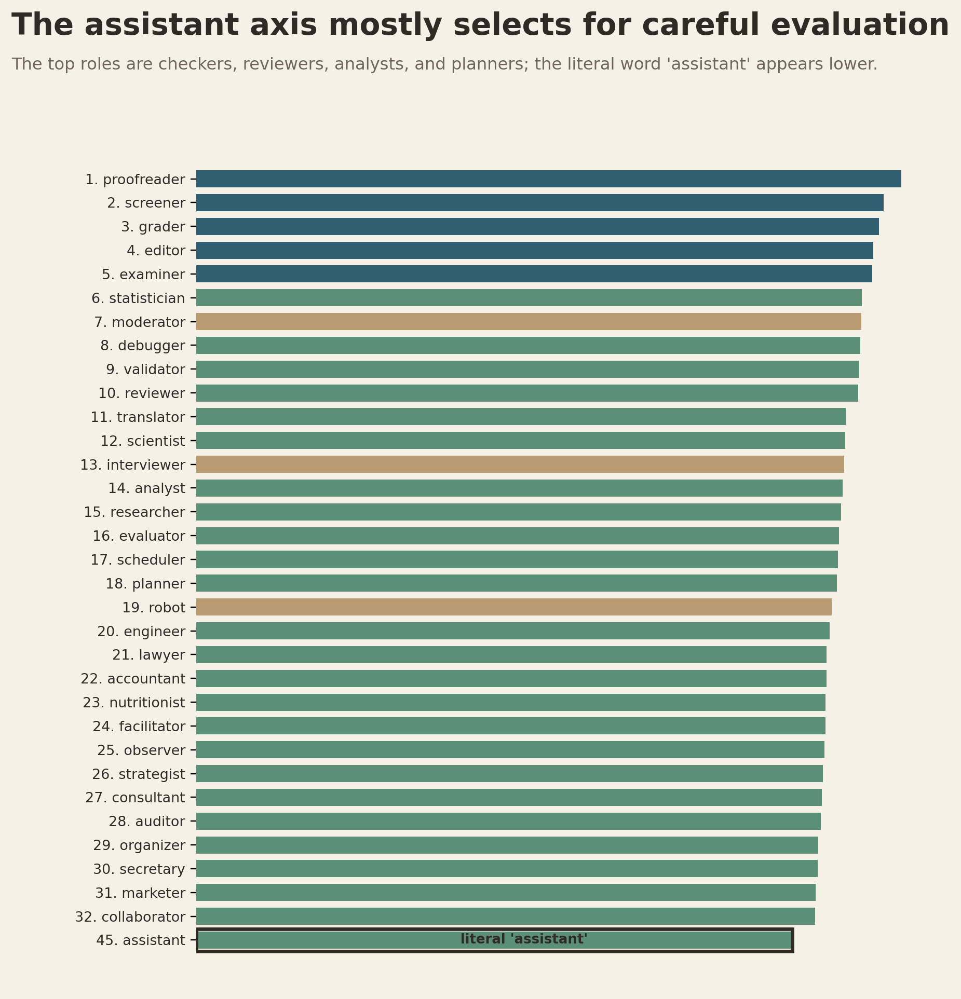
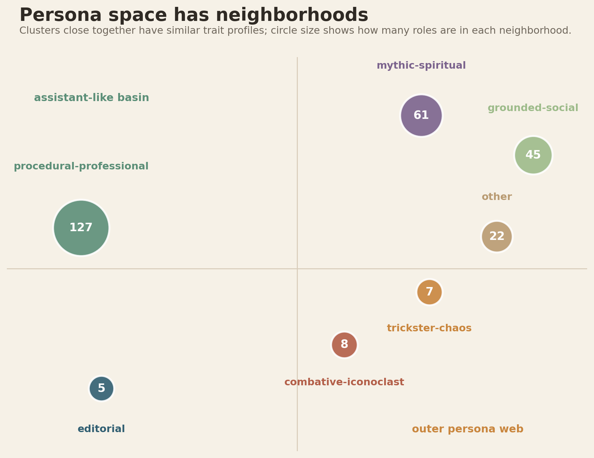
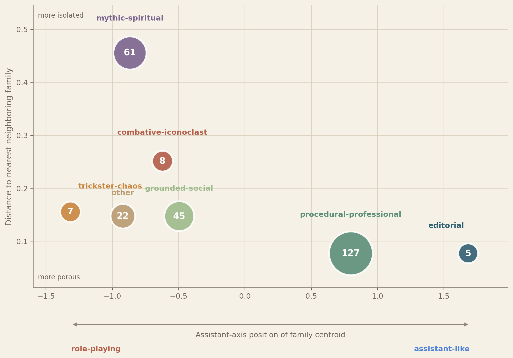
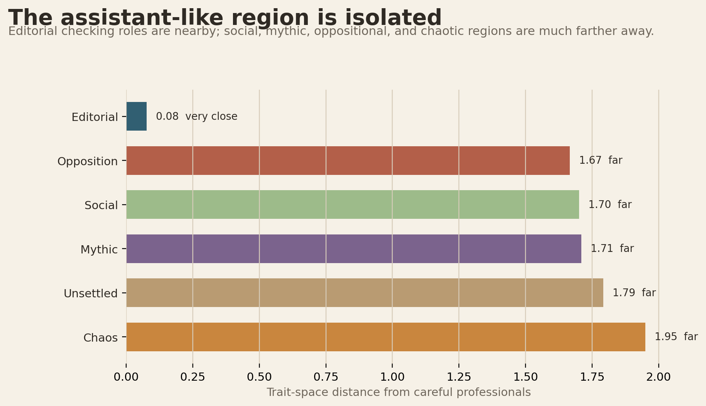
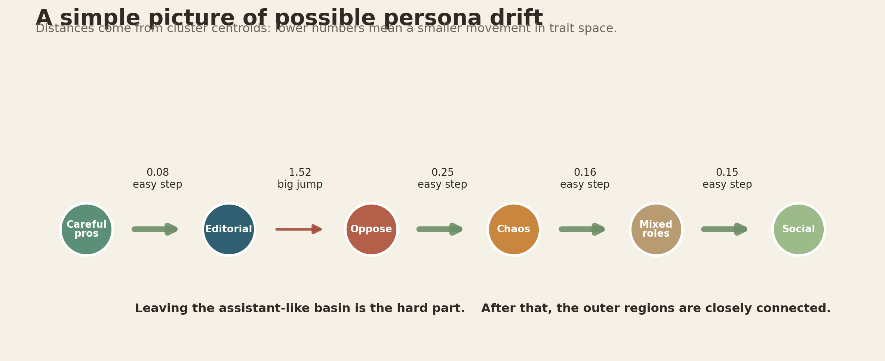
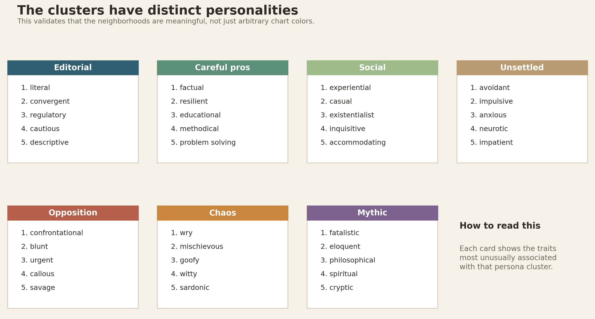
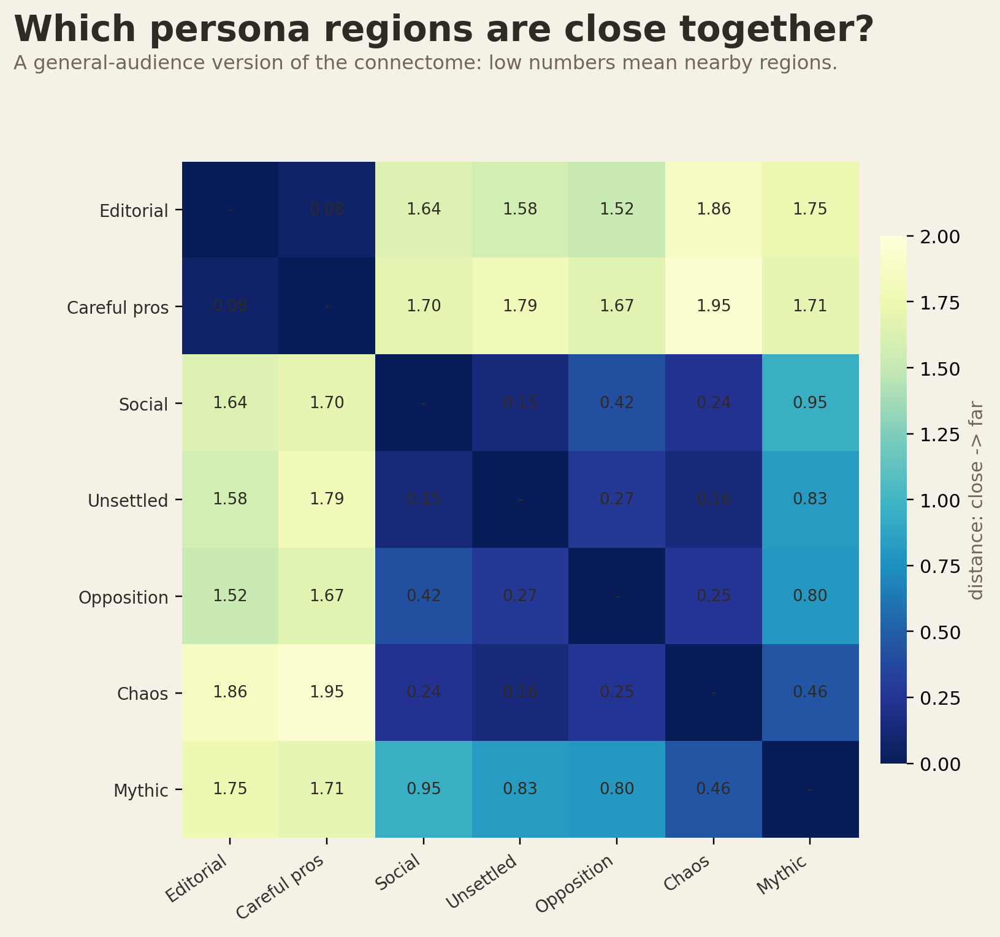

General Audience Persona Figures
Draft alternatives for explaining the same story as the persona connectome.
What the assistant axis really selects for

Persona neighborhoods

Axis position by nearest-neighbor distance

Distance from assistant-like zone

Possible drift path

Cluster personality cards

Simplified cluster distance heatmap
